8 SS8 Results
| Pos | Car | Code | Time (s) | Gap | Diff |
|---|---|---|---|---|---|
| 1 | 11 | NEU | 629.6 | 0.0 | 0.0 |
| 2 | 16 | FOU | 631.3 | 1.7 | 1.7 |
| 3 | 6 | SOR | 632.4 | 2.8 | 1.1 |
| 4 | 1 | OGI | 632.5 | 2.9 | 0.1 |
| 5 | 33 | EVA | 633.9 | 4.3 | 1.4 |
| 6 | 69 | ROV | 635.5 | 5.9 | 1.6 |
| 7 | 2 | SOL | 642.9 | 13.3 | 7.4 |
| 8 | 44 | GRE | 643.1 | 13.5 | 0.2 |
| 9 | 14 | SLN | 647.1 | 17.5 | 4.0 |
| 10 | 18 | KAT | 647.8 | 18.2 | 0.7 |
8.1 Stage SS8 Splits Analysis
Reports on splits
8.1.1 Split Locations
Length of each split section in km:
| full_split_distances | stage_dist | |
|---|---|---|
| split_1 | 4.72 | 4.72 |
| split_2 | 6.04 | 10.76 |
| split_3 | 7.11 | 17.87 |
| split_N | 1.30 | 19.17 |
8.1.2 Stage Split Times & Result
Summary of stage split times and overall stage result:
| code | split_1 | split_2 | split_3 | split_N | diffFirstS | position |
|---|---|---|---|---|---|---|
| NEU | 148.3 | 353.4 | 591.1 | 629.6 | 0.0 | 1 |
| FOU | 148.5 | 353.9 | 592.9 | 631.3 | 1.7 | 2 |
| SOR | 148.0 | 354.8 | 593.8 | 632.4 | 2.8 | 3 |
| OGI | 149.4 | 356.1 | 594.3 | 632.5 | 2.9 | 4 |
| EVA | 150.3 | 356.1 | 595.5 | 633.9 | 4.3 | 5 |
| ROV | 149.9 | 355.0 | 596.0 | 635.5 | 5.9 | 6 |
| SOL | 152.7 | 362.4 | 603.7 | 642.9 | 13.3 | 7 |
| GRE | 151.4 | 361.7 | 603.8 | 643.1 | 13.5 | 8 |
| SLN | 153.3 | 364.3 | 607.4 | 647.1 | 17.5 | 9 |
| KAT | 152.5 | 364.3 | 608.6 | 647.8 | 18.2 | 10 |
| PER | 174.2 | 416.3 | NA | NA | NA | NA |
8.1.3 Split Time Rankings
Rank of each split time:
| code | split_1 | split_2 | split_3 | split_N |
|---|---|---|---|---|
| NEU | 2 | 1 | 1 | 1 |
| FOU | 3 | 2 | 2 | 2 |
| SOR | 1 | 3 | 3 | 3 |
| OGI | 4 | 5 | 4 | 4 |
| EVA | 6 | 5 | 5 | 5 |
| ROV | 5 | 4 | 6 | 6 |
| SOL | 9 | 7 | 7 | 7 |
| GRE | 7 | 6 | 8 | 8 |
| SLN | 10 | 8 | 9 | 9 |
| KAT | 8 | 8 | 10 | 10 |
Rank on each split section:
| code | split_1 | split_2 | split_3 | split_N |
|---|---|---|---|---|
| NEU | 2 | 1 | 1 | 3 |
| FOU | 3 | 3 | 4 | 2 |
| SOR | 1 | 6 | 3 | 4 |
| OGI | 4 | 5 | 2 | 1 |
| EVA | 6 | 4 | 5 | 2 |
| ROV | 5 | 2 | 6 | 7 |
| SOL | 9 | 7 | 7 | 5 |
| GRE | 7 | 8 | 8 | 6 |
| SLN | 10 | 9 | 9 | 8 |
| KAT | 8 | 10 | 10 | 5 |
| PER | 11 | 11 | NA | NA |
8.1.4 Split Section Pace
Pace is measured in seconds per kilometer, which is to say, how long it takes to complete each kilometer (lower is better):
| code | split_1 | split_2 | split_3 | split_N |
|---|---|---|---|---|
| NEU | 31.42 | 33.96 | 33.43 | 29.62 |
| FOU | 31.46 | 34.01 | 33.61 | 29.54 |
| SOR | 31.36 | 34.24 | 33.61 | 29.69 |
| OGI | 31.65 | 34.22 | 33.50 | 29.38 |
| EVA | 31.84 | 34.07 | 33.67 | 29.54 |
| ROV | 31.76 | 33.96 | 33.90 | 30.38 |
| SOL | 32.35 | 34.72 | 33.94 | 30.15 |
| GRE | 32.08 | 34.82 | 34.05 | 30.23 |
| SLN | 32.48 | 34.93 | 34.19 | 30.54 |
| KAT | 32.31 | 35.07 | 34.36 | 30.15 |
| PER | 36.91 | 40.08 | NA | NA |
8.1.5 Pace Chart
Pace relative to the stage winner.
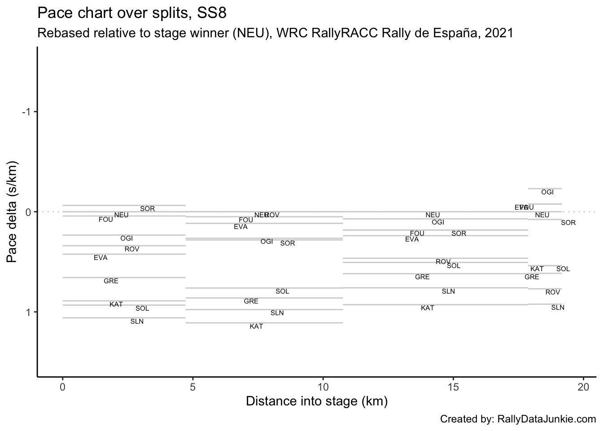
8.1.6 Ultimate Stage Comparisons
Split time comparisons relative to various ultimate stage time calculations.
These views provide various ways of comparing the performance of each driver to various ghost drivers:
- best recorded split time at each split (ultimate actuals): gives an estimate of how well the driver’s split times compare with each first ranked split time (time into stage at each split);
- fastest time going from one split to the next (ultimate sections): gives an estimate of how quickly each driver completed each split section relative to the quickest time recorded completing that split section (time taken to go from one split point to the next);
- accumulated ultimate sections times: gives and estimate of how quickly the driver is going relative to the fastest possible completion of the stage based on accumulated ultimate split section times.
8.1.6.1 Ultimate Actuals
Driver times compared to the first ranked recorded split time at each split:
| code | split_1 | split_2 | split_3 | split_N |
|---|---|---|---|---|
| NEU | 0.3 | 0.0 | 0.0 | 0.0 |
| FOU | 0.5 | 0.5 | 1.8 | 1.7 |
| SOR | 0.0 | 1.4 | 2.7 | 2.8 |
| OGI | 1.4 | 2.7 | 3.2 | 2.9 |
| EVA | 2.3 | 2.7 | 4.4 | 4.3 |
| ROV | 1.9 | 1.6 | 4.9 | 5.9 |
| SOL | 4.7 | 9.0 | 12.6 | 13.3 |
| GRE | 3.4 | 8.3 | 12.7 | 13.5 |
| SLN | 5.3 | 10.9 | 16.3 | 17.5 |
| KAT | 4.5 | 10.9 | 17.5 | 18.2 |
| ultimate | 0.0 | 0.0 | 0.0 | 0.0 |
8.1.6.2 Ultimate Sections
Split durations rebased relative to the fastest transit of each split section:
| code | split_1 | split_2 | split_3 | split_N |
|---|---|---|---|---|
| NEU | 0.3 | 0.0 | 0.0 | 0.3 |
| FOU | 0.5 | 0.3 | 1.3 | 0.2 |
| SOR | 0.0 | 1.7 | 1.3 | 0.4 |
| OGI | 1.4 | 1.6 | 0.5 | 0.0 |
| EVA | 2.3 | 0.7 | 1.7 | 0.2 |
| ROV | 1.9 | 0.0 | 3.3 | 1.3 |
| SOL | 4.7 | 4.6 | 3.6 | 1.0 |
| GRE | 3.4 | 5.2 | 4.4 | 1.1 |
| SLN | 5.3 | 5.9 | 5.4 | 1.5 |
| KAT | 4.5 | 6.7 | 6.6 | 1.0 |
| ultimate | 0.0 | 0.0 | 0.0 | 0.0 |
8.1.6.3 Ultimate Accumulated Sections
Actual split times relative to the accumulated ultimate split section times:
| code | split_1 | split_2 | split_3 | split_N |
|---|---|---|---|---|
| NEU | 0.3 | 0.3 | 0.3 | 0.6 |
| FOU | 0.5 | 0.8 | 2.1 | 2.3 |
| SOR | 0.0 | 1.7 | 3.0 | 3.4 |
| OGI | 1.4 | 3.0 | 3.5 | 3.5 |
| EVA | 2.3 | 3.0 | 4.7 | 4.9 |
| ROV | 1.9 | 1.9 | 5.2 | 6.5 |
| SOL | 4.7 | 9.3 | 12.9 | 13.9 |
| GRE | 3.4 | 8.6 | 13.0 | 14.1 |
| SLN | 5.3 | 11.2 | 16.6 | 18.1 |
| KAT | 4.5 | 11.2 | 17.8 | 18.8 |
| ultimate | 0.0 | 0.0 | 0.0 | 0.0 |
8.1.7 Split Section Pace Distribution
Distribution of pace values for each split section:
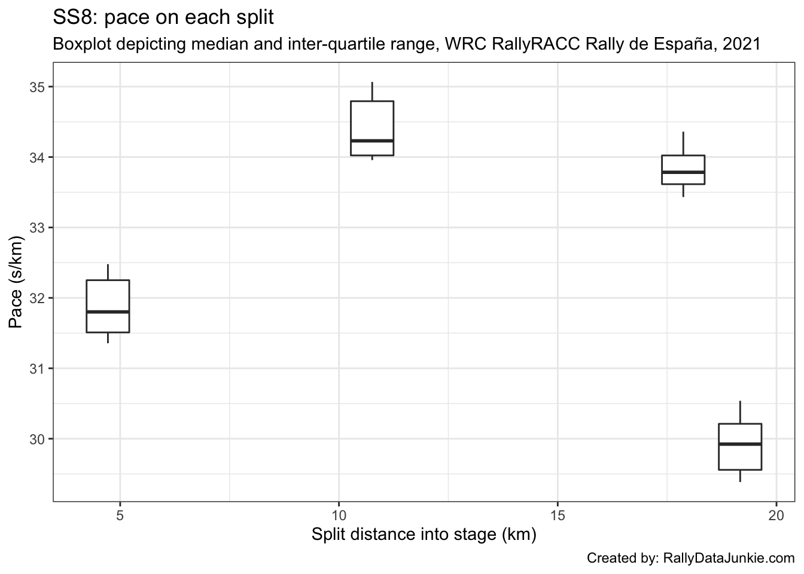
8.2 Text report
| code | identifier | entryId | stage | overall_pos | prev_position | retained_lead | lost_lead | gained_lead | overall_position_delta | overall_chase_code | overall_lead_code | overall_gap | overall_diff | overall_chase | overall_stage_pos | stage_position | stage_win | position | TimeInS | gap | diff | chase | chase_code | lead_code |
|---|---|---|---|---|---|---|---|---|---|---|---|---|---|---|---|---|---|---|---|---|---|---|---|---|
| NEU | 11 | 24007 | SS8 | 1 | 1 | TRUE | FALSE | FALSE | 0 | EVA | NA | 0.0 | NA | 6.7 | 1 | 1 | TRUE | 1 | 629.6 | 0.0 | 0.0 | 1.7 | FOU | NA |
| FOU | 16 | 24013 | SS8 | 6 | 6 | FALSE | FALSE | FALSE | 0 | GRE | ROV | 79.8 | 33.4 | 34.7 | 2 | 2 | FALSE | 2 | 631.3 | 1.7 | 1.7 | 1.1 | SOR | NEU |
| SOR | 6 | 24012 | SS8 | 4 | 4 | FALSE | FALSE | FALSE | 0 | ROV | OGI | 31.9 | 6.2 | 14.5 | 3 | 3 | FALSE | 3 | 632.4 | 2.8 | 1.1 | 0.1 | OGI | FOU |
| OGI | 1 | 24005 | SS8 | 3 | 3 | FALSE | FALSE | FALSE | 0 | SOR | EVA | 25.7 | 19.0 | 6.2 | 4 | 4 | FALSE | 4 | 632.5 | 2.9 | 0.1 | 1.4 | EVA | SOR |
| EVA | 33 | 24006 | SS8 | 2 | 2 | FALSE | FALSE | FALSE | 0 | OGI | NEU | 6.7 | 6.7 | 19.0 | 5 | 5 | FALSE | 5 | 633.9 | 4.3 | 1.4 | 1.6 | ROV | OGI |
| ROV | 69 | 24008 | SS8 | 5 | 5 | FALSE | FALSE | FALSE | 0 | FOU | SOR | 46.4 | 14.5 | 33.4 | 6 | 6 | FALSE | 6 | 635.5 | 5.9 | 1.6 | 7.4 | SOL | EVA |
| SOL | 2 | 24015 | SS8 | 8 | 8 | FALSE | FALSE | FALSE | 0 | SLN | GRE | 145.2 | 30.7 | 30.4 | 7 | 7 | FALSE | 7 | 642.9 | 13.3 | 7.4 | 0.2 | GRE | ROV |
| GRE | 44 | 24011 | SS8 | 7 | 7 | FALSE | FALSE | FALSE | 0 | SOL | FOU | 114.5 | 34.7 | 30.7 | 8 | 8 | FALSE | 8 | 643.1 | 13.5 | 0.2 | 4.0 | SLN | SOL |
| SLN | 14 | 24014 | SS8 | 9 | 9 | FALSE | FALSE | FALSE | 0 | PER | SOL | 175.6 | 30.4 | NA | 9 | 9 | FALSE | 9 | 647.1 | 17.5 | 4.0 | NA | NA | GRE |
Stage report for SS8:
NEU took the stage win and retained the overall lead of the rally in a time of 629.6s.
FOU took second place on stage, with a time of 631.3s .
SOR was in third on stage, with a time of 632.4s .
OGI took fourth on stage, 2.9s behind stage winner NEU , just 0.1s further behind SOR.
EVA took fifth position on stage, 1.4s further back behind OGI .
ROV took sixth on stage, 1.6s further back behind EVA .
SOL took seventh position on stage, with a time of 642.9s .
GRE was in eighth on stage, with a time of 643.1s , only 0.2s further back behind SOL.
SLN took ninth position on stage, with a time of 647.1s .
8.3 Driver Report, SS8 - OGI
OGI took fourth on stage, 2.9s behind stage winner NEU , just 0.1s further behind SOR.
Stage report for OGI.
| Pos | Car | Code | Time (s) | Gap | Diff |
|---|---|---|---|---|---|
| 1 | 11 | NEU | -2.9 | -2.9 | 0.0 |
| 2 | 16 | FOU | -1.2 | -1.2 | 1.7 |
| 3 | 6 | SOR | -0.1 | -0.1 | 1.1 |
| 4 | 1 | OGI | 0.0 | 0.0 | 0.1 |
| 5 | 33 | EVA | 1.4 | 1.4 | 1.4 |
| 6 | 69 | ROV | 3.0 | 3.0 | 1.6 |
| 7 | 2 | SOL | 10.4 | 10.4 | 7.4 |
| 8 | 44 | GRE | 10.6 | 10.6 | 0.2 |
| 9 | 14 | SLN | 14.6 | 14.6 | 4.0 |
| 10 | 18 | KAT | 15.3 | 15.3 | 0.7 |
8.3.1 Rebased Split Times
OGI’s delta at each split compared to other drivers.
| code | split_1 | split_2 | split_3 | split_N |
|---|---|---|---|---|
| NEU | -1.1 | -2.7 | -3.2 | -2.9 |
| FOU | -0.9 | -2.2 | -1.4 | -1.2 |
| SOR | -1.4 | -1.3 | -0.5 | -0.1 |
| OGI | 0.0 | 0.0 | 0.0 | 0.0 |
| EVA | 0.9 | 0.0 | 1.2 | 1.4 |
| ROV | 0.5 | -1.1 | 1.7 | 3.0 |
| SOL | 3.3 | 6.3 | 9.4 | 10.4 |
| GRE | 2.0 | 5.6 | 9.5 | 10.6 |
| SLN | 3.9 | 8.2 | 13.1 | 14.6 |
| KAT | 3.1 | 8.2 | 14.3 | 15.3 |
| PER | 24.8 | 60.2 | NA | NA |
8.3.2 Off-the-Pace Chart
Accumulated stage time deltas at each split:
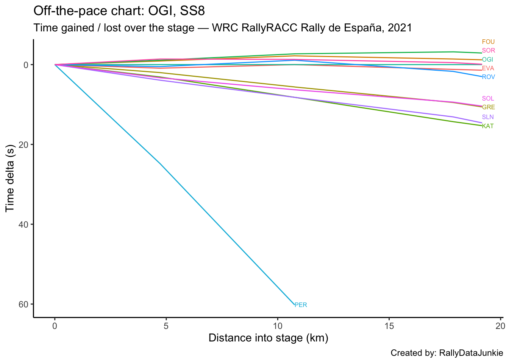
8.3.3 Within-Split Duration Deltas
OGI’s delta in time to complete each split section compared to other drivers:
| code | split_1 | split_2 | split_3 | split_N |
|---|---|---|---|---|
| NEU | -1.1 | -1.6 | -0.5 | 0.3 |
| FOU | -0.9 | -1.3 | 0.8 | 0.2 |
| SOR | -1.4 | 0.1 | 0.8 | 0.4 |
| OGI | 0.0 | 0.0 | 0.0 | 0.0 |
| EVA | 0.9 | -0.9 | 1.2 | 0.2 |
| ROV | 0.5 | -1.6 | 2.8 | 1.3 |
| SOL | 3.3 | 3.0 | 3.1 | 1.0 |
| GRE | 2.0 | 3.6 | 3.9 | 1.1 |
| SLN | 3.9 | 4.3 | 4.9 | 1.5 |
| KAT | 3.1 | 5.1 | 6.1 | 1.0 |
| PER | 24.8 | 35.4 | NA | NA |
8.3.4 Within-Split Pace Deltas
| code | split_1 | split_2 | split_3 | split_N |
|---|---|---|---|---|
| NEU | -0.23 | -0.26 | -0.07 | 0.23 |
| FOU | -0.19 | -0.22 | 0.11 | 0.15 |
| SOR | -0.30 | 0.02 | 0.11 | 0.31 |
| OGI | 0.00 | 0.00 | 0.00 | 0.00 |
| EVA | 0.19 | -0.15 | 0.17 | 0.15 |
| ROV | 0.11 | -0.26 | 0.39 | 1.00 |
| SOL | 0.70 | 0.50 | 0.44 | 0.77 |
| GRE | 0.42 | 0.60 | 0.55 | 0.85 |
| SLN | 0.83 | 0.71 | 0.69 | 1.15 |
| KAT | 0.66 | 0.84 | 0.86 | 0.77 |
| PER | 5.25 | 5.86 | NA | NA |
8.3.5 Within-Split Pace Map
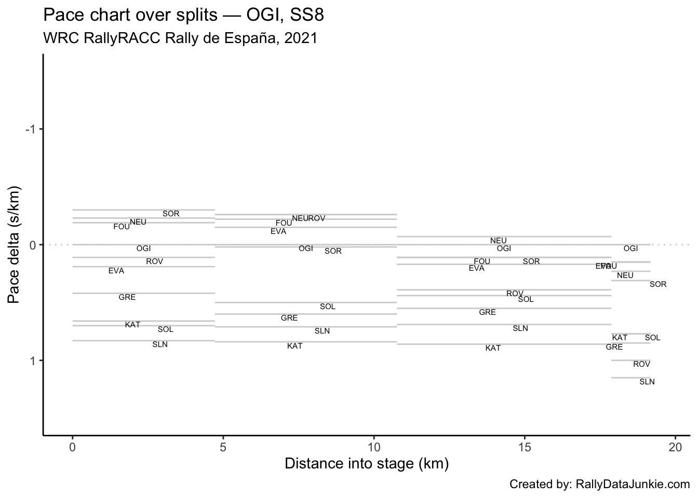
8.4 Driver Report, SS8 - EVA
EVA took fifth position on stage, 1.4s further back behind OGI .
Stage report for EVA.
| Pos | Car | Code | Time (s) | Gap | Diff |
|---|---|---|---|---|---|
| 1 | 11 | NEU | -4.3 | -4.3 | 0.0 |
| 2 | 16 | FOU | -2.6 | -2.6 | 1.7 |
| 3 | 6 | SOR | -1.5 | -1.5 | 1.1 |
| 4 | 1 | OGI | -1.4 | -1.4 | 0.1 |
| 5 | 33 | EVA | 0.0 | 0.0 | 1.4 |
| 6 | 69 | ROV | 1.6 | 1.6 | 1.6 |
| 7 | 2 | SOL | 9.0 | 9.0 | 7.4 |
| 8 | 44 | GRE | 9.2 | 9.2 | 0.2 |
| 9 | 14 | SLN | 13.2 | 13.2 | 4.0 |
| 10 | 18 | KAT | 13.9 | 13.9 | 0.7 |
8.4.1 Rebased Split Times
EVA’s delta at each split compared to other drivers.
| code | split_1 | split_2 | split_3 | split_N |
|---|---|---|---|---|
| NEU | -2.0 | -2.7 | -4.4 | -4.3 |
| FOU | -1.8 | -2.2 | -2.6 | -2.6 |
| SOR | -2.3 | -1.3 | -1.7 | -1.5 |
| OGI | -0.9 | 0.0 | -1.2 | -1.4 |
| EVA | 0.0 | 0.0 | 0.0 | 0.0 |
| ROV | -0.4 | -1.1 | 0.5 | 1.6 |
| SOL | 2.4 | 6.3 | 8.2 | 9.0 |
| GRE | 1.1 | 5.6 | 8.3 | 9.2 |
| SLN | 3.0 | 8.2 | 11.9 | 13.2 |
| KAT | 2.2 | 8.2 | 13.1 | 13.9 |
| PER | 23.9 | 60.2 | NA | NA |
8.4.2 Off-the-Pace Chart
Accumulated stage time deltas at each split:
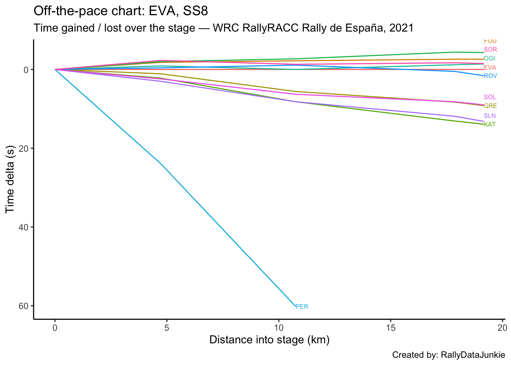
8.4.3 Within-Split Duration Deltas
EVA’s delta in time to complete each split section compared to other drivers:
| code | split_1 | split_2 | split_3 | split_N |
|---|---|---|---|---|
| NEU | -2.0 | -0.7 | -1.7 | 0.1 |
| FOU | -1.8 | -0.4 | -0.4 | 0.0 |
| SOR | -2.3 | 1.0 | -0.4 | 0.2 |
| OGI | -0.9 | 0.9 | -1.2 | -0.2 |
| EVA | 0.0 | 0.0 | 0.0 | 0.0 |
| ROV | -0.4 | -0.7 | 1.6 | 1.1 |
| SOL | 2.4 | 3.9 | 1.9 | 0.8 |
| GRE | 1.1 | 4.5 | 2.7 | 0.9 |
| SLN | 3.0 | 5.2 | 3.7 | 1.3 |
| KAT | 2.2 | 6.0 | 4.9 | 0.8 |
| PER | 23.9 | 36.3 | NA | NA |
8.4.4 Within-Split Pace Deltas
| code | split_1 | split_2 | split_3 | split_N |
|---|---|---|---|---|
| NEU | -0.42 | -0.12 | -0.24 | 0.08 |
| FOU | -0.38 | -0.07 | -0.06 | 0.00 |
| SOR | -0.49 | 0.17 | -0.06 | 0.15 |
| OGI | -0.19 | 0.15 | -0.17 | -0.15 |
| EVA | 0.00 | 0.00 | 0.00 | 0.00 |
| ROV | -0.08 | -0.12 | 0.23 | 0.85 |
| SOL | 0.51 | 0.65 | 0.27 | 0.62 |
| GRE | 0.23 | 0.75 | 0.38 | 0.69 |
| SLN | 0.64 | 0.86 | 0.52 | 1.00 |
| KAT | 0.47 | 0.99 | 0.69 | 0.62 |
| PER | 5.06 | 6.01 | NA | NA |
8.4.5 Within-Split Pace Map
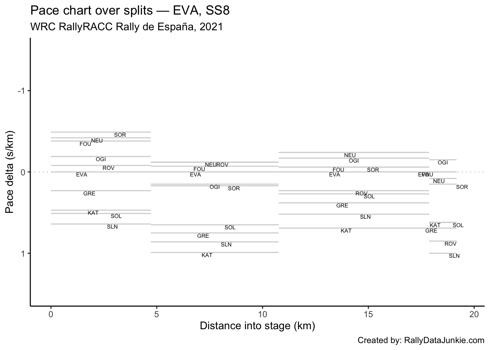
8.5 Driver Report, SS8 - NEU
NEU took the stage win and retained the overall lead of the rally in a time of 629.6s.
Stage report for NEU.
| Pos | Car | Code | Time (s) | Gap | Diff |
|---|---|---|---|---|---|
| 1 | 11 | NEU | 0.0 | 0.0 | 0.0 |
| 2 | 16 | FOU | 1.7 | 1.7 | 1.7 |
| 3 | 6 | SOR | 2.8 | 2.8 | 1.1 |
| 4 | 1 | OGI | 2.9 | 2.9 | 0.1 |
| 5 | 33 | EVA | 4.3 | 4.3 | 1.4 |
| 6 | 69 | ROV | 5.9 | 5.9 | 1.6 |
| 7 | 2 | SOL | 13.3 | 13.3 | 7.4 |
| 8 | 44 | GRE | 13.5 | 13.5 | 0.2 |
| 9 | 14 | SLN | 17.5 | 17.5 | 4.0 |
| 10 | 18 | KAT | 18.2 | 18.2 | 0.7 |
8.5.1 Rebased Split Times
NEU’s delta at each split compared to other drivers.
| code | split_1 | split_2 | split_3 | split_N |
|---|---|---|---|---|
| NEU | 0.0 | 0.0 | 0.0 | 0.0 |
| FOU | 0.2 | 0.5 | 1.8 | 1.7 |
| SOR | -0.3 | 1.4 | 2.7 | 2.8 |
| OGI | 1.1 | 2.7 | 3.2 | 2.9 |
| EVA | 2.0 | 2.7 | 4.4 | 4.3 |
| ROV | 1.6 | 1.6 | 4.9 | 5.9 |
| SOL | 4.4 | 9.0 | 12.6 | 13.3 |
| GRE | 3.1 | 8.3 | 12.7 | 13.5 |
| SLN | 5.0 | 10.9 | 16.3 | 17.5 |
| KAT | 4.2 | 10.9 | 17.5 | 18.2 |
| PER | 25.9 | 62.9 | NA | NA |
8.5.2 Off-the-Pace Chart
Accumulated stage time deltas at each split:
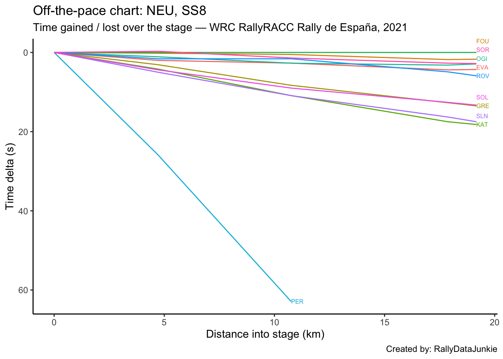
8.5.3 Within-Split Duration Deltas
NEU’s delta in time to complete each split section compared to other drivers:
| code | split_1 | split_2 | split_3 | split_N |
|---|---|---|---|---|
| NEU | 0.0 | 0.0 | 0.0 | 0.0 |
| FOU | 0.2 | 0.3 | 1.3 | -0.1 |
| SOR | -0.3 | 1.7 | 1.3 | 0.1 |
| OGI | 1.1 | 1.6 | 0.5 | -0.3 |
| EVA | 2.0 | 0.7 | 1.7 | -0.1 |
| ROV | 1.6 | 0.0 | 3.3 | 1.0 |
| SOL | 4.4 | 4.6 | 3.6 | 0.7 |
| GRE | 3.1 | 5.2 | 4.4 | 0.8 |
| SLN | 5.0 | 5.9 | 5.4 | 1.2 |
| KAT | 4.2 | 6.7 | 6.6 | 0.7 |
| PER | 25.9 | 37.0 | NA | NA |
8.5.4 Within-Split Pace Deltas
| code | split_1 | split_2 | split_3 | split_N |
|---|---|---|---|---|
| NEU | 0.00 | 0.00 | 0.00 | 0.00 |
| FOU | 0.04 | 0.05 | 0.18 | -0.08 |
| SOR | -0.06 | 0.28 | 0.18 | 0.08 |
| OGI | 0.23 | 0.26 | 0.07 | -0.23 |
| EVA | 0.42 | 0.12 | 0.24 | -0.08 |
| ROV | 0.34 | 0.00 | 0.46 | 0.77 |
| SOL | 0.93 | 0.76 | 0.51 | 0.54 |
| GRE | 0.66 | 0.86 | 0.62 | 0.62 |
| SLN | 1.06 | 0.98 | 0.76 | 0.92 |
| KAT | 0.89 | 1.11 | 0.93 | 0.54 |
| PER | 5.49 | 6.13 | NA | NA |
8.5.5 Within-Split Pace Map
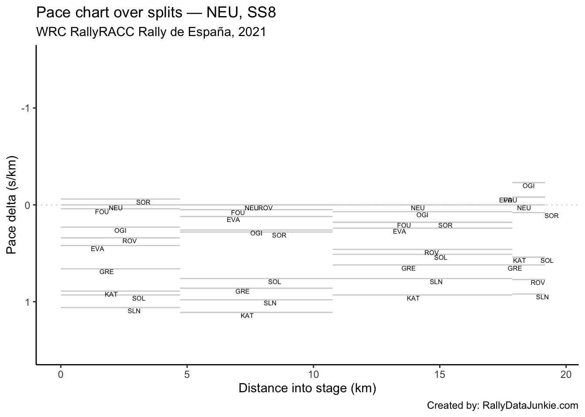
8.6 Driver Report, SS8 - ROV
ROV took sixth on stage, 1.6s further back behind EVA .
Stage report for ROV.
| Pos | Car | Code | Time (s) | Gap | Diff |
|---|---|---|---|---|---|
| 1 | 11 | NEU | -5.9 | -5.9 | 0.0 |
| 2 | 16 | FOU | -4.2 | -4.2 | 1.7 |
| 3 | 6 | SOR | -3.1 | -3.1 | 1.1 |
| 4 | 1 | OGI | -3.0 | -3.0 | 0.1 |
| 5 | 33 | EVA | -1.6 | -1.6 | 1.4 |
| 6 | 69 | ROV | 0.0 | 0.0 | 1.6 |
| 7 | 2 | SOL | 7.4 | 7.4 | 7.4 |
| 8 | 44 | GRE | 7.6 | 7.6 | 0.2 |
| 9 | 14 | SLN | 11.6 | 11.6 | 4.0 |
| 10 | 18 | KAT | 12.3 | 12.3 | 0.7 |
8.6.1 Rebased Split Times
ROV’s delta at each split compared to other drivers.
| code | split_1 | split_2 | split_3 | split_N |
|---|---|---|---|---|
| NEU | -1.6 | -1.6 | -4.9 | -5.9 |
| FOU | -1.4 | -1.1 | -3.1 | -4.2 |
| SOR | -1.9 | -0.2 | -2.2 | -3.1 |
| OGI | -0.5 | 1.1 | -1.7 | -3.0 |
| EVA | 0.4 | 1.1 | -0.5 | -1.6 |
| ROV | 0.0 | 0.0 | 0.0 | 0.0 |
| SOL | 2.8 | 7.4 | 7.7 | 7.4 |
| GRE | 1.5 | 6.7 | 7.8 | 7.6 |
| SLN | 3.4 | 9.3 | 11.4 | 11.6 |
| KAT | 2.6 | 9.3 | 12.6 | 12.3 |
| PER | 24.3 | 61.3 | NA | NA |
8.6.2 Off-the-Pace Chart
Accumulated stage time deltas at each split:
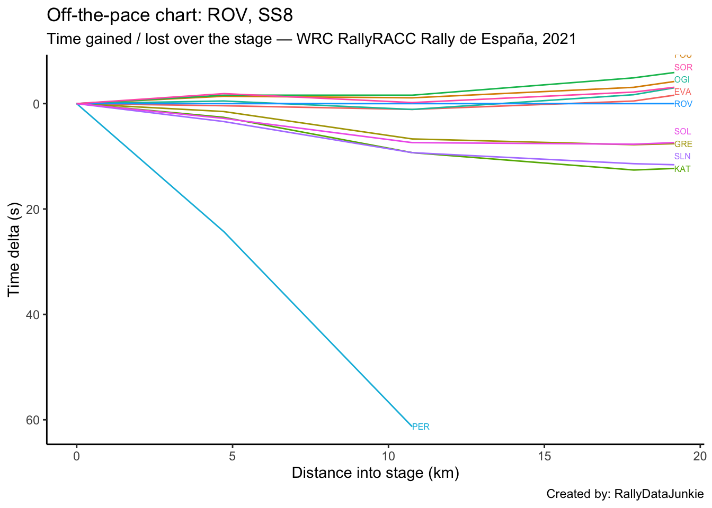
8.6.3 Within-Split Duration Deltas
ROV’s delta in time to complete each split section compared to other drivers:
| code | split_1 | split_2 | split_3 | split_N |
|---|---|---|---|---|
| NEU | -1.6 | 0.0 | -3.3 | -1.0 |
| FOU | -1.4 | 0.3 | -2.0 | -1.1 |
| SOR | -1.9 | 1.7 | -2.0 | -0.9 |
| OGI | -0.5 | 1.6 | -2.8 | -1.3 |
| EVA | 0.4 | 0.7 | -1.6 | -1.1 |
| ROV | 0.0 | 0.0 | 0.0 | 0.0 |
| SOL | 2.8 | 4.6 | 0.3 | -0.3 |
| GRE | 1.5 | 5.2 | 1.1 | -0.2 |
| SLN | 3.4 | 5.9 | 2.1 | 0.2 |
| KAT | 2.6 | 6.7 | 3.3 | -0.3 |
| PER | 24.3 | 37.0 | NA | NA |
8.6.4 Within-Split Pace Deltas
| code | split_1 | split_2 | split_3 | split_N |
|---|---|---|---|---|
| NEU | -0.34 | 0.00 | -0.46 | -0.77 |
| FOU | -0.30 | 0.05 | -0.28 | -0.85 |
| SOR | -0.40 | 0.28 | -0.28 | -0.69 |
| OGI | -0.11 | 0.26 | -0.39 | -1.00 |
| EVA | 0.08 | 0.12 | -0.23 | -0.85 |
| ROV | 0.00 | 0.00 | 0.00 | 0.00 |
| SOL | 0.59 | 0.76 | 0.04 | -0.23 |
| GRE | 0.32 | 0.86 | 0.15 | -0.15 |
| SLN | 0.72 | 0.98 | 0.30 | 0.15 |
| KAT | 0.55 | 1.11 | 0.46 | -0.23 |
| PER | 5.15 | 6.13 | NA | NA |
8.6.5 Within-Split Pace Map
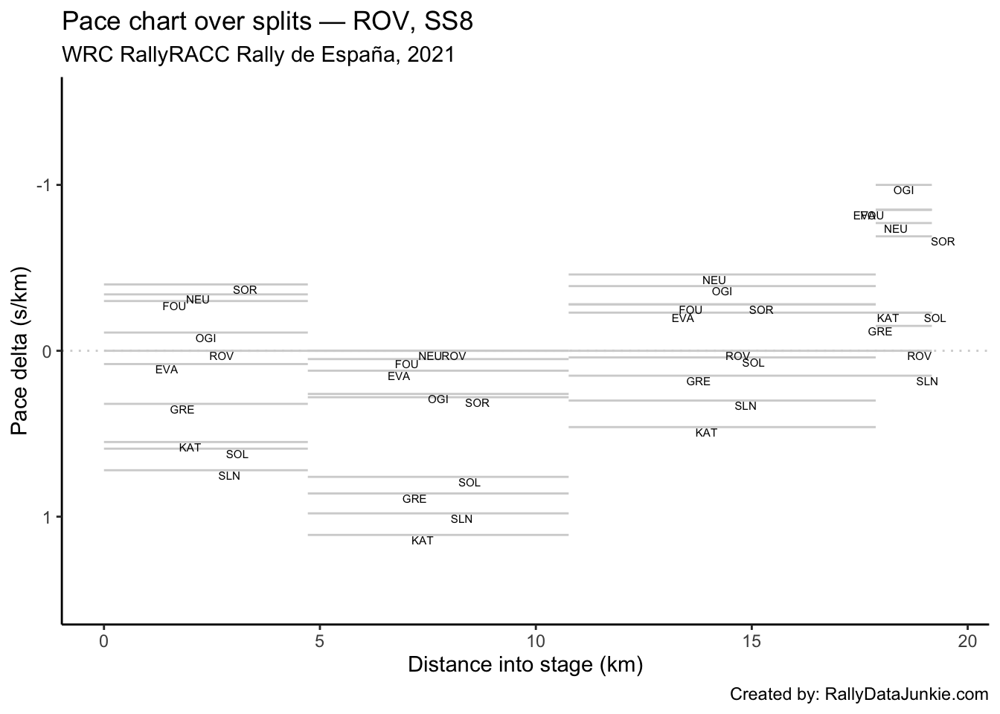
8.7 Driver Report, SS8 - TÄN
No stage report for TÄN.
8.8 Driver Report, SS8 - KAT
Stage report for KAT.
| Pos | Car | Code | Time (s) | Gap | Diff |
|---|---|---|---|---|---|
| 1 | 11 | NEU | -18.2 | -18.2 | 0.0 |
| 2 | 16 | FOU | -16.5 | -16.5 | 1.7 |
| 3 | 6 | SOR | -15.4 | -15.4 | 1.1 |
| 4 | 1 | OGI | -15.3 | -15.3 | 0.1 |
| 5 | 33 | EVA | -13.9 | -13.9 | 1.4 |
| 6 | 69 | ROV | -12.3 | -12.3 | 1.6 |
| 7 | 2 | SOL | -4.9 | -4.9 | 7.4 |
| 8 | 44 | GRE | -4.7 | -4.7 | 0.2 |
| 9 | 14 | SLN | -0.7 | -0.7 | 4.0 |
| 10 | 18 | KAT | 0.0 | 0.0 | 0.7 |
8.8.1 Rebased Split Times
KAT’s delta at each split compared to other drivers.
| code | split_1 | split_2 | split_3 | split_N |
|---|---|---|---|---|
| NEU | -4.2 | -10.9 | -17.5 | -18.2 |
| FOU | -4.0 | -10.4 | -15.7 | -16.5 |
| SOR | -4.5 | -9.5 | -14.8 | -15.4 |
| OGI | -3.1 | -8.2 | -14.3 | -15.3 |
| EVA | -2.2 | -8.2 | -13.1 | -13.9 |
| ROV | -2.6 | -9.3 | -12.6 | -12.3 |
| SOL | 0.2 | -1.9 | -4.9 | -4.9 |
| GRE | -1.1 | -2.6 | -4.8 | -4.7 |
| SLN | 0.8 | 0.0 | -1.2 | -0.7 |
| KAT | 0.0 | 0.0 | 0.0 | 0.0 |
| PER | 21.7 | 52.0 | NA | NA |
8.8.2 Off-the-Pace Chart
Accumulated stage time deltas at each split:
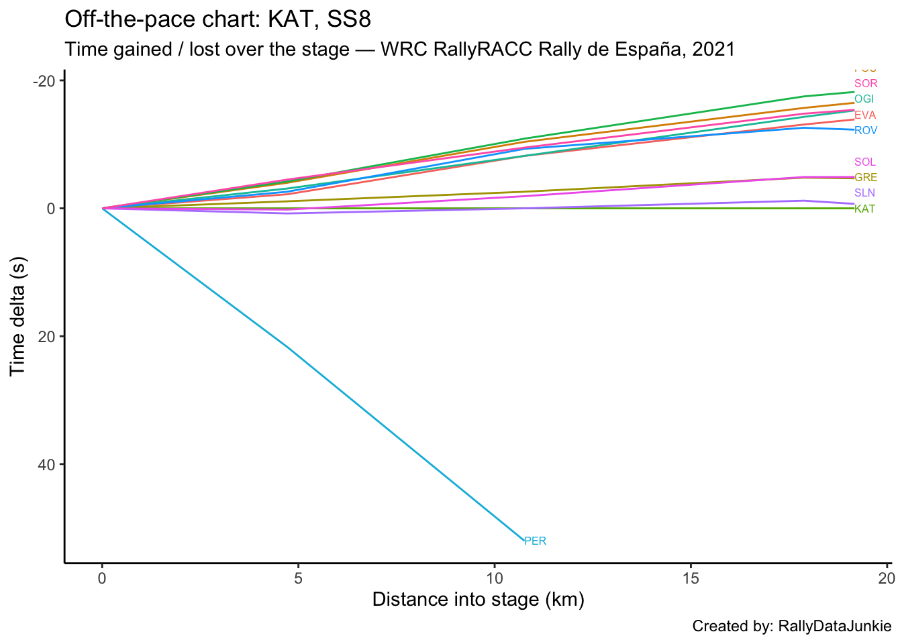
8.8.3 Within-Split Duration Deltas
KAT’s delta in time to complete each split section compared to other drivers:
| code | split_1 | split_2 | split_3 | split_N |
|---|---|---|---|---|
| NEU | -4.2 | -6.7 | -6.6 | -0.7 |
| FOU | -4.0 | -6.4 | -5.3 | -0.8 |
| SOR | -4.5 | -5.0 | -5.3 | -0.6 |
| OGI | -3.1 | -5.1 | -6.1 | -1.0 |
| EVA | -2.2 | -6.0 | -4.9 | -0.8 |
| ROV | -2.6 | -6.7 | -3.3 | 0.3 |
| SOL | 0.2 | -2.1 | -3.0 | 0.0 |
| GRE | -1.1 | -1.5 | -2.2 | 0.1 |
| SLN | 0.8 | -0.8 | -1.2 | 0.5 |
| KAT | 0.0 | 0.0 | 0.0 | 0.0 |
| PER | 21.7 | 30.3 | NA | NA |
8.8.4 Within-Split Pace Deltas
| code | split_1 | split_2 | split_3 | split_N |
|---|---|---|---|---|
| NEU | -0.89 | -1.11 | -0.93 | -0.54 |
| FOU | -0.85 | -1.06 | -0.75 | -0.62 |
| SOR | -0.95 | -0.83 | -0.75 | -0.46 |
| OGI | -0.66 | -0.84 | -0.86 | -0.77 |
| EVA | -0.47 | -0.99 | -0.69 | -0.62 |
| ROV | -0.55 | -1.11 | -0.46 | 0.23 |
| SOL | 0.04 | -0.35 | -0.42 | 0.00 |
| GRE | -0.23 | -0.25 | -0.31 | 0.08 |
| SLN | 0.17 | -0.13 | -0.17 | 0.38 |
| KAT | 0.00 | 0.00 | 0.00 | 0.00 |
| PER | 4.60 | 5.02 | NA | NA |
8.8.5 Within-Split Pace Map
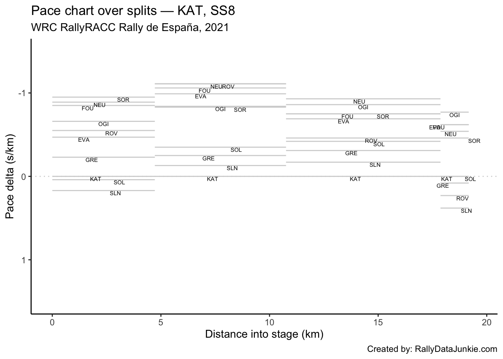
8.9 Driver Report, SS8 - GRE
GRE was in eighth on stage, with a time of 643.1s , only 0.2s further back behind SOL.
Stage report for GRE.
| Pos | Car | Code | Time (s) | Gap | Diff |
|---|---|---|---|---|---|
| 1 | 11 | NEU | -13.5 | -13.5 | 0.0 |
| 2 | 16 | FOU | -11.8 | -11.8 | 1.7 |
| 3 | 6 | SOR | -10.7 | -10.7 | 1.1 |
| 4 | 1 | OGI | -10.6 | -10.6 | 0.1 |
| 5 | 33 | EVA | -9.2 | -9.2 | 1.4 |
| 6 | 69 | ROV | -7.6 | -7.6 | 1.6 |
| 7 | 2 | SOL | -0.2 | -0.2 | 7.4 |
| 8 | 44 | GRE | 0.0 | 0.0 | 0.2 |
| 9 | 14 | SLN | 4.0 | 4.0 | 4.0 |
| 10 | 18 | KAT | 4.7 | 4.7 | 0.7 |
8.9.1 Rebased Split Times
GRE’s delta at each split compared to other drivers.
| code | split_1 | split_2 | split_3 | split_N |
|---|---|---|---|---|
| NEU | -3.1 | -8.3 | -12.7 | -13.5 |
| FOU | -2.9 | -7.8 | -10.9 | -11.8 |
| SOR | -3.4 | -6.9 | -10.0 | -10.7 |
| OGI | -2.0 | -5.6 | -9.5 | -10.6 |
| EVA | -1.1 | -5.6 | -8.3 | -9.2 |
| ROV | -1.5 | -6.7 | -7.8 | -7.6 |
| SOL | 1.3 | 0.7 | -0.1 | -0.2 |
| GRE | 0.0 | 0.0 | 0.0 | 0.0 |
| SLN | 1.9 | 2.6 | 3.6 | 4.0 |
| KAT | 1.1 | 2.6 | 4.8 | 4.7 |
| PER | 22.8 | 54.6 | NA | NA |
8.9.2 Off-the-Pace Chart
Accumulated stage time deltas at each split:
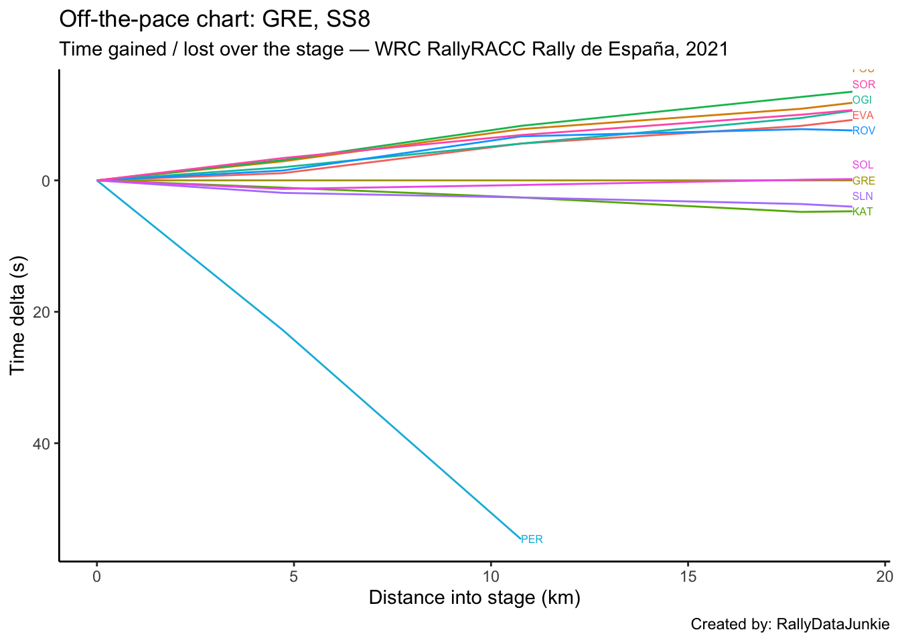
8.9.3 Within-Split Duration Deltas
GRE’s delta in time to complete each split section compared to other drivers:
| code | split_1 | split_2 | split_3 | split_N |
|---|---|---|---|---|
| NEU | -3.1 | -5.2 | -4.4 | -0.8 |
| FOU | -2.9 | -4.9 | -3.1 | -0.9 |
| SOR | -3.4 | -3.5 | -3.1 | -0.7 |
| OGI | -2.0 | -3.6 | -3.9 | -1.1 |
| EVA | -1.1 | -4.5 | -2.7 | -0.9 |
| ROV | -1.5 | -5.2 | -1.1 | 0.2 |
| SOL | 1.3 | -0.6 | -0.8 | -0.1 |
| GRE | 0.0 | 0.0 | 0.0 | 0.0 |
| SLN | 1.9 | 0.7 | 1.0 | 0.4 |
| KAT | 1.1 | 1.5 | 2.2 | -0.1 |
| PER | 22.8 | 31.8 | NA | NA |
8.9.4 Within-Split Pace Deltas
| code | split_1 | split_2 | split_3 | split_N |
|---|---|---|---|---|
| NEU | -0.66 | -0.86 | -0.62 | -0.62 |
| FOU | -0.61 | -0.81 | -0.44 | -0.69 |
| SOR | -0.72 | -0.58 | -0.44 | -0.54 |
| OGI | -0.42 | -0.60 | -0.55 | -0.85 |
| EVA | -0.23 | -0.75 | -0.38 | -0.69 |
| ROV | -0.32 | -0.86 | -0.15 | 0.15 |
| SOL | 0.28 | -0.10 | -0.11 | -0.08 |
| GRE | 0.00 | 0.00 | 0.00 | 0.00 |
| SLN | 0.40 | 0.12 | 0.14 | 0.31 |
| KAT | 0.23 | 0.25 | 0.31 | -0.08 |
| PER | 4.83 | 5.26 | NA | NA |
8.9.5 Within-Split Pace Map
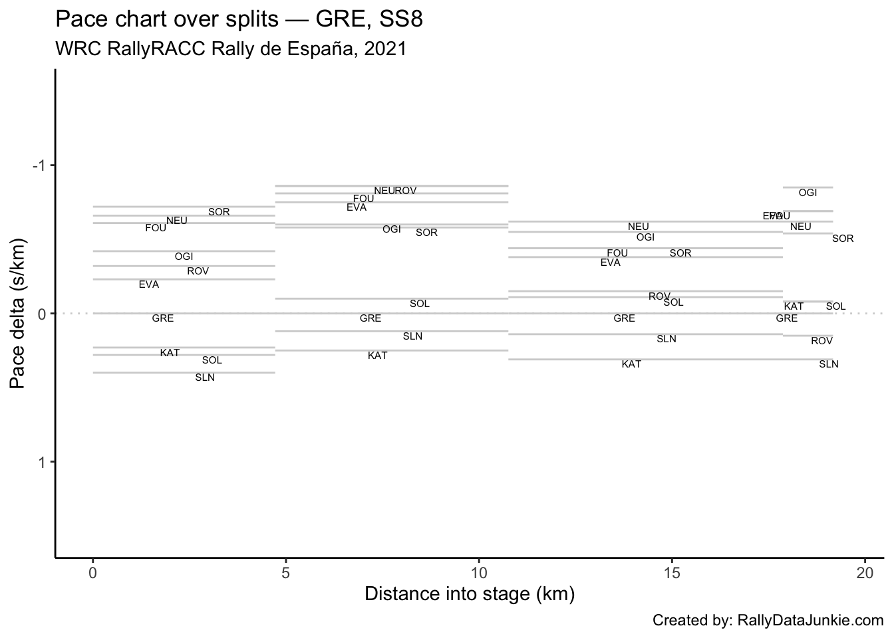
8.10 Driver Report, SS8 - SOR
SOR was in third on stage, with a time of 632.4s .
Stage report for SOR.
| Pos | Car | Code | Time (s) | Gap | Diff |
|---|---|---|---|---|---|
| 1 | 11 | NEU | -2.8 | -2.8 | 0.0 |
| 2 | 16 | FOU | -1.1 | -1.1 | 1.7 |
| 3 | 6 | SOR | 0.0 | 0.0 | 1.1 |
| 4 | 1 | OGI | 0.1 | 0.1 | 0.1 |
| 5 | 33 | EVA | 1.5 | 1.5 | 1.4 |
| 6 | 69 | ROV | 3.1 | 3.1 | 1.6 |
| 7 | 2 | SOL | 10.5 | 10.5 | 7.4 |
| 8 | 44 | GRE | 10.7 | 10.7 | 0.2 |
| 9 | 14 | SLN | 14.7 | 14.7 | 4.0 |
| 10 | 18 | KAT | 15.4 | 15.4 | 0.7 |
8.10.1 Rebased Split Times
SOR’s delta at each split compared to other drivers.
| code | split_1 | split_2 | split_3 | split_N |
|---|---|---|---|---|
| NEU | 0.3 | -1.4 | -2.7 | -2.8 |
| FOU | 0.5 | -0.9 | -0.9 | -1.1 |
| SOR | 0.0 | 0.0 | 0.0 | 0.0 |
| OGI | 1.4 | 1.3 | 0.5 | 0.1 |
| EVA | 2.3 | 1.3 | 1.7 | 1.5 |
| ROV | 1.9 | 0.2 | 2.2 | 3.1 |
| SOL | 4.7 | 7.6 | 9.9 | 10.5 |
| GRE | 3.4 | 6.9 | 10.0 | 10.7 |
| SLN | 5.3 | 9.5 | 13.6 | 14.7 |
| KAT | 4.5 | 9.5 | 14.8 | 15.4 |
| PER | 26.2 | 61.5 | NA | NA |
8.10.2 Off-the-Pace Chart
Accumulated stage time deltas at each split:
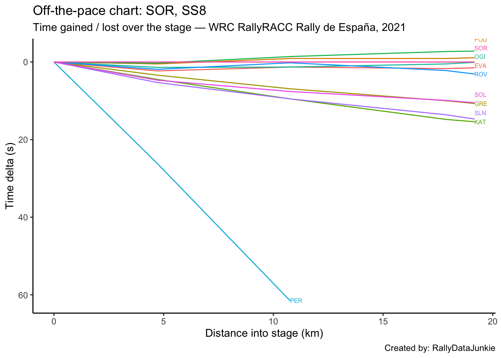
8.10.3 Within-Split Duration Deltas
SOR’s delta in time to complete each split section compared to other drivers:
| code | split_1 | split_2 | split_3 | split_N |
|---|---|---|---|---|
| NEU | 0.3 | -1.7 | -1.3 | -0.1 |
| FOU | 0.5 | -1.4 | 0.0 | -0.2 |
| SOR | 0.0 | 0.0 | 0.0 | 0.0 |
| OGI | 1.4 | -0.1 | -0.8 | -0.4 |
| EVA | 2.3 | -1.0 | 0.4 | -0.2 |
| ROV | 1.9 | -1.7 | 2.0 | 0.9 |
| SOL | 4.7 | 2.9 | 2.3 | 0.6 |
| GRE | 3.4 | 3.5 | 3.1 | 0.7 |
| SLN | 5.3 | 4.2 | 4.1 | 1.1 |
| KAT | 4.5 | 5.0 | 5.3 | 0.6 |
| PER | 26.2 | 35.3 | NA | NA |
8.10.4 Within-Split Pace Deltas
| code | split_1 | split_2 | split_3 | split_N |
|---|---|---|---|---|
| NEU | 0.06 | -0.28 | -0.18 | -0.08 |
| FOU | 0.11 | -0.23 | 0.00 | -0.15 |
| SOR | 0.00 | 0.00 | 0.00 | 0.00 |
| OGI | 0.30 | -0.02 | -0.11 | -0.31 |
| EVA | 0.49 | -0.17 | 0.06 | -0.15 |
| ROV | 0.40 | -0.28 | 0.28 | 0.69 |
| SOL | 1.00 | 0.48 | 0.32 | 0.46 |
| GRE | 0.72 | 0.58 | 0.44 | 0.54 |
| SLN | 1.12 | 0.70 | 0.58 | 0.85 |
| KAT | 0.95 | 0.83 | 0.75 | 0.46 |
| PER | 5.55 | 5.84 | NA | NA |
8.10.5 Within-Split Pace Map
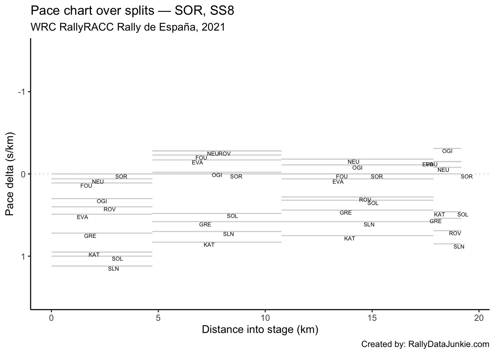
8.11 Driver Report, SS8 - FOU
FOU took second place on stage, with a time of 631.3s .
Stage report for FOU.
| Pos | Car | Code | Time (s) | Gap | Diff |
|---|---|---|---|---|---|
| 1 | 11 | NEU | -1.7 | -1.7 | 0.0 |
| 2 | 16 | FOU | 0.0 | 0.0 | 1.7 |
| 3 | 6 | SOR | 1.1 | 1.1 | 1.1 |
| 4 | 1 | OGI | 1.2 | 1.2 | 0.1 |
| 5 | 33 | EVA | 2.6 | 2.6 | 1.4 |
| 6 | 69 | ROV | 4.2 | 4.2 | 1.6 |
| 7 | 2 | SOL | 11.6 | 11.6 | 7.4 |
| 8 | 44 | GRE | 11.8 | 11.8 | 0.2 |
| 9 | 14 | SLN | 15.8 | 15.8 | 4.0 |
| 10 | 18 | KAT | 16.5 | 16.5 | 0.7 |
8.11.1 Rebased Split Times
FOU’s delta at each split compared to other drivers.
| code | split_1 | split_2 | split_3 | split_N |
|---|---|---|---|---|
| NEU | -0.2 | -0.5 | -1.8 | -1.7 |
| FOU | 0.0 | 0.0 | 0.0 | 0.0 |
| SOR | -0.5 | 0.9 | 0.9 | 1.1 |
| OGI | 0.9 | 2.2 | 1.4 | 1.2 |
| EVA | 1.8 | 2.2 | 2.6 | 2.6 |
| ROV | 1.4 | 1.1 | 3.1 | 4.2 |
| SOL | 4.2 | 8.5 | 10.8 | 11.6 |
| GRE | 2.9 | 7.8 | 10.9 | 11.8 |
| SLN | 4.8 | 10.4 | 14.5 | 15.8 |
| KAT | 4.0 | 10.4 | 15.7 | 16.5 |
| PER | 25.7 | 62.4 | NA | NA |
8.11.2 Off-the-Pace Chart
Accumulated stage time deltas at each split:
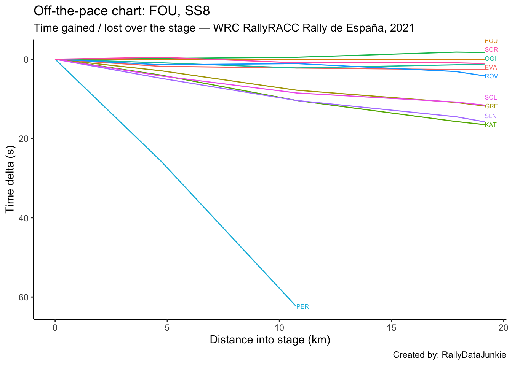
8.11.3 Within-Split Duration Deltas
FOU’s delta in time to complete each split section compared to other drivers:
| code | split_1 | split_2 | split_3 | split_N |
|---|---|---|---|---|
| NEU | -0.2 | -0.3 | -1.3 | 0.1 |
| FOU | 0.0 | 0.0 | 0.0 | 0.0 |
| SOR | -0.5 | 1.4 | 0.0 | 0.2 |
| OGI | 0.9 | 1.3 | -0.8 | -0.2 |
| EVA | 1.8 | 0.4 | 0.4 | 0.0 |
| ROV | 1.4 | -0.3 | 2.0 | 1.1 |
| SOL | 4.2 | 4.3 | 2.3 | 0.8 |
| GRE | 2.9 | 4.9 | 3.1 | 0.9 |
| SLN | 4.8 | 5.6 | 4.1 | 1.3 |
| KAT | 4.0 | 6.4 | 5.3 | 0.8 |
| PER | 25.7 | 36.7 | NA | NA |
8.11.4 Within-Split Pace Deltas
| code | split_1 | split_2 | split_3 | split_N |
|---|---|---|---|---|
| NEU | -0.04 | -0.05 | -0.18 | 0.08 |
| FOU | 0.00 | 0.00 | 0.00 | 0.00 |
| SOR | -0.11 | 0.23 | 0.00 | 0.15 |
| OGI | 0.19 | 0.22 | -0.11 | -0.15 |
| EVA | 0.38 | 0.07 | 0.06 | 0.00 |
| ROV | 0.30 | -0.05 | 0.28 | 0.85 |
| SOL | 0.89 | 0.71 | 0.32 | 0.62 |
| GRE | 0.61 | 0.81 | 0.44 | 0.69 |
| SLN | 1.02 | 0.93 | 0.58 | 1.00 |
| KAT | 0.85 | 1.06 | 0.75 | 0.62 |
| PER | 5.44 | 6.08 | NA | NA |
8.11.5 Within-Split Pace Map
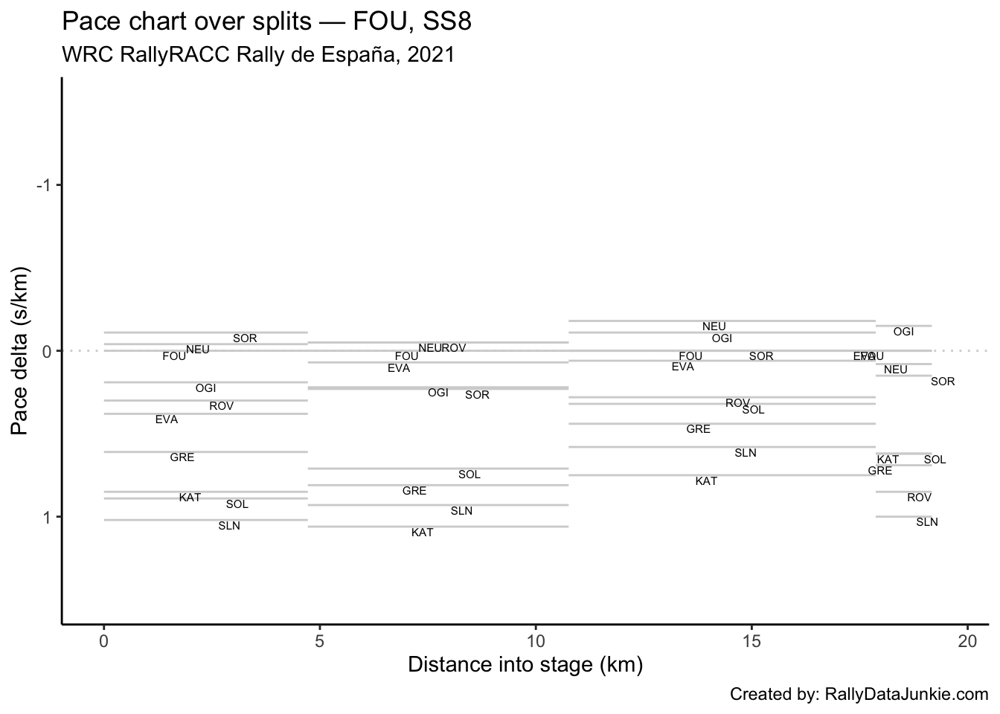
8.12 Driver Report, SS8 - SLN
SLN took ninth position on stage, with a time of 647.1s .
Stage report for SLN.
| Pos | Car | Code | Time (s) | Gap | Diff |
|---|---|---|---|---|---|
| 1 | 11 | NEU | -17.5 | -17.5 | 0.0 |
| 2 | 16 | FOU | -15.8 | -15.8 | 1.7 |
| 3 | 6 | SOR | -14.7 | -14.7 | 1.1 |
| 4 | 1 | OGI | -14.6 | -14.6 | 0.1 |
| 5 | 33 | EVA | -13.2 | -13.2 | 1.4 |
| 6 | 69 | ROV | -11.6 | -11.6 | 1.6 |
| 7 | 2 | SOL | -4.2 | -4.2 | 7.4 |
| 8 | 44 | GRE | -4.0 | -4.0 | 0.2 |
| 9 | 14 | SLN | 0.0 | 0.0 | 4.0 |
| 10 | 18 | KAT | 0.7 | 0.7 | 0.7 |
8.12.1 Rebased Split Times
SLN’s delta at each split compared to other drivers.
| code | split_1 | split_2 | split_3 | split_N |
|---|---|---|---|---|
| NEU | -5.0 | -10.9 | -16.3 | -17.5 |
| FOU | -4.8 | -10.4 | -14.5 | -15.8 |
| SOR | -5.3 | -9.5 | -13.6 | -14.7 |
| OGI | -3.9 | -8.2 | -13.1 | -14.6 |
| EVA | -3.0 | -8.2 | -11.9 | -13.2 |
| ROV | -3.4 | -9.3 | -11.4 | -11.6 |
| SOL | -0.6 | -1.9 | -3.7 | -4.2 |
| GRE | -1.9 | -2.6 | -3.6 | -4.0 |
| SLN | 0.0 | 0.0 | 0.0 | 0.0 |
| KAT | -0.8 | 0.0 | 1.2 | 0.7 |
| PER | 20.9 | 52.0 | NA | NA |
8.12.2 Off-the-Pace Chart
Accumulated stage time deltas at each split:
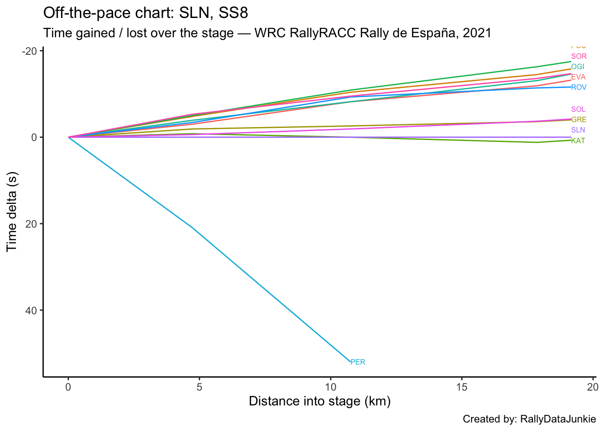
8.12.3 Within-Split Duration Deltas
SLN’s delta in time to complete each split section compared to other drivers:
| code | split_1 | split_2 | split_3 | split_N |
|---|---|---|---|---|
| NEU | -5.0 | -5.9 | -5.4 | -1.2 |
| FOU | -4.8 | -5.6 | -4.1 | -1.3 |
| SOR | -5.3 | -4.2 | -4.1 | -1.1 |
| OGI | -3.9 | -4.3 | -4.9 | -1.5 |
| EVA | -3.0 | -5.2 | -3.7 | -1.3 |
| ROV | -3.4 | -5.9 | -2.1 | -0.2 |
| SOL | -0.6 | -1.3 | -1.8 | -0.5 |
| GRE | -1.9 | -0.7 | -1.0 | -0.4 |
| SLN | 0.0 | 0.0 | 0.0 | 0.0 |
| KAT | -0.8 | 0.8 | 1.2 | -0.5 |
| PER | 20.9 | 31.1 | NA | NA |
8.12.4 Within-Split Pace Deltas
| code | split_1 | split_2 | split_3 | split_N |
|---|---|---|---|---|
| NEU | -1.06 | -0.98 | -0.76 | -0.92 |
| FOU | -1.02 | -0.93 | -0.58 | -1.00 |
| SOR | -1.12 | -0.70 | -0.58 | -0.85 |
| OGI | -0.83 | -0.71 | -0.69 | -1.15 |
| EVA | -0.64 | -0.86 | -0.52 | -1.00 |
| ROV | -0.72 | -0.98 | -0.30 | -0.15 |
| SOL | -0.13 | -0.22 | -0.25 | -0.38 |
| GRE | -0.40 | -0.12 | -0.14 | -0.31 |
| SLN | 0.00 | 0.00 | 0.00 | 0.00 |
| KAT | -0.17 | 0.13 | 0.17 | -0.38 |
| PER | 4.43 | 5.15 | NA | NA |
8.12.5 Within-Split Pace Map
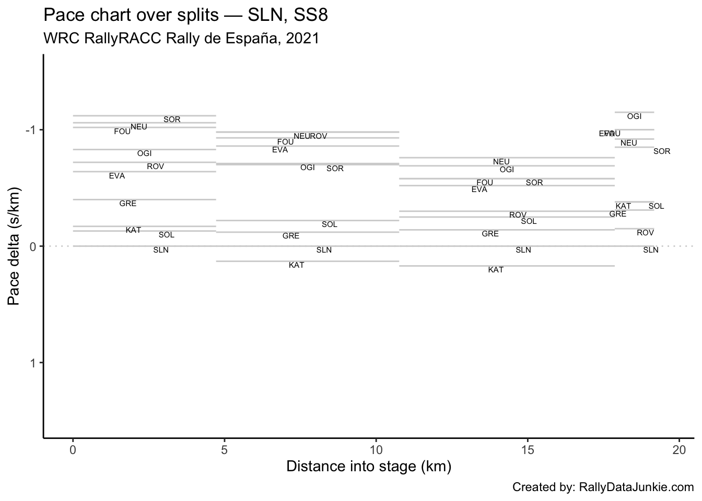
8.13 Driver Report, SS8 - SOL
SOL took seventh position on stage, with a time of 642.9s .
Stage report for SOL.
| Pos | Car | Code | Time (s) | Gap | Diff |
|---|---|---|---|---|---|
| 1 | 11 | NEU | -13.3 | -13.3 | 0.0 |
| 2 | 16 | FOU | -11.6 | -11.6 | 1.7 |
| 3 | 6 | SOR | -10.5 | -10.5 | 1.1 |
| 4 | 1 | OGI | -10.4 | -10.4 | 0.1 |
| 5 | 33 | EVA | -9.0 | -9.0 | 1.4 |
| 6 | 69 | ROV | -7.4 | -7.4 | 1.6 |
| 7 | 2 | SOL | 0.0 | 0.0 | 7.4 |
| 8 | 44 | GRE | 0.2 | 0.2 | 0.2 |
| 9 | 14 | SLN | 4.2 | 4.2 | 4.0 |
| 10 | 18 | KAT | 4.9 | 4.9 | 0.7 |
8.13.1 Rebased Split Times
SOL’s delta at each split compared to other drivers.
| code | split_1 | split_2 | split_3 | split_N |
|---|---|---|---|---|
| NEU | -4.4 | -9.0 | -12.6 | -13.3 |
| FOU | -4.2 | -8.5 | -10.8 | -11.6 |
| SOR | -4.7 | -7.6 | -9.9 | -10.5 |
| OGI | -3.3 | -6.3 | -9.4 | -10.4 |
| EVA | -2.4 | -6.3 | -8.2 | -9.0 |
| ROV | -2.8 | -7.4 | -7.7 | -7.4 |
| SOL | 0.0 | 0.0 | 0.0 | 0.0 |
| GRE | -1.3 | -0.7 | 0.1 | 0.2 |
| SLN | 0.6 | 1.9 | 3.7 | 4.2 |
| KAT | -0.2 | 1.9 | 4.9 | 4.9 |
| PER | 21.5 | 53.9 | NA | NA |
8.13.2 Off-the-Pace Chart
Accumulated stage time deltas at each split:
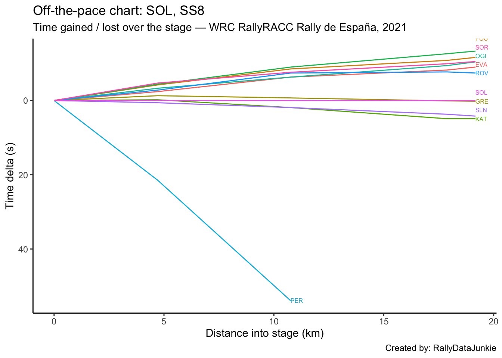
8.13.3 Within-Split Duration Deltas
SOL’s delta in time to complete each split section compared to other drivers:
| code | split_1 | split_2 | split_3 | split_N |
|---|---|---|---|---|
| NEU | -4.4 | -4.6 | -3.6 | -0.7 |
| FOU | -4.2 | -4.3 | -2.3 | -0.8 |
| SOR | -4.7 | -2.9 | -2.3 | -0.6 |
| OGI | -3.3 | -3.0 | -3.1 | -1.0 |
| EVA | -2.4 | -3.9 | -1.9 | -0.8 |
| ROV | -2.8 | -4.6 | -0.3 | 0.3 |
| SOL | 0.0 | 0.0 | 0.0 | 0.0 |
| GRE | -1.3 | 0.6 | 0.8 | 0.1 |
| SLN | 0.6 | 1.3 | 1.8 | 0.5 |
| KAT | -0.2 | 2.1 | 3.0 | 0.0 |
| PER | 21.5 | 32.4 | NA | NA |
8.13.4 Within-Split Pace Deltas
| code | split_1 | split_2 | split_3 | split_N |
|---|---|---|---|---|
| NEU | -0.93 | -0.76 | -0.51 | -0.54 |
| FOU | -0.89 | -0.71 | -0.32 | -0.62 |
| SOR | -1.00 | -0.48 | -0.32 | -0.46 |
| OGI | -0.70 | -0.50 | -0.44 | -0.77 |
| EVA | -0.51 | -0.65 | -0.27 | -0.62 |
| ROV | -0.59 | -0.76 | -0.04 | 0.23 |
| SOL | 0.00 | 0.00 | 0.00 | 0.00 |
| GRE | -0.28 | 0.10 | 0.11 | 0.08 |
| SLN | 0.13 | 0.22 | 0.25 | 0.38 |
| KAT | -0.04 | 0.35 | 0.42 | 0.00 |
| PER | 4.56 | 5.36 | NA | NA |
8.13.5 Within-Split Pace Map
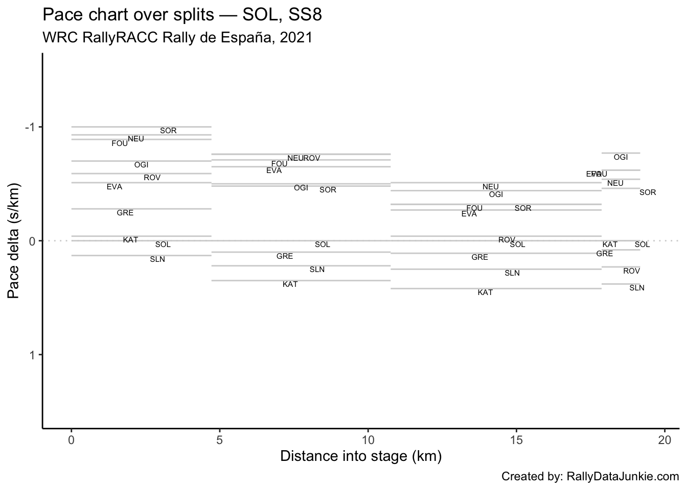
8.14 Driver Report, SS8 - PER
No stage report for PER.